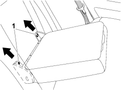

7050B18 REAR SEAT ARMREST - R+R
- Path
- Procedures > 70 FITTINGS > 7050 REAR SEATS > 7050B REAR SEAT HEAD RESTRAINT/ARMREST > 7050B18 REAR SEAT ARMREST - R+R
- Kind
- repair procedure (removal / refitting; the operation number is the code)
- Applies to
- all engines; all production periods
- Interactive page
- https://sloeber94.github.io/elrnDB-fCrm/en/#/194001154
Applies to: all engines; all production periods
 Removing
Removing
 Refitting
Refitting- Lower the armrest.
1. Undo the bolts and remove the armrest releasing it as shown by the arrows.

Applies to: all engines; all production periods
Refitting
Removing- Position the armrest on the seat backrest, taking care that the armrest is correctly inserted in its housing.